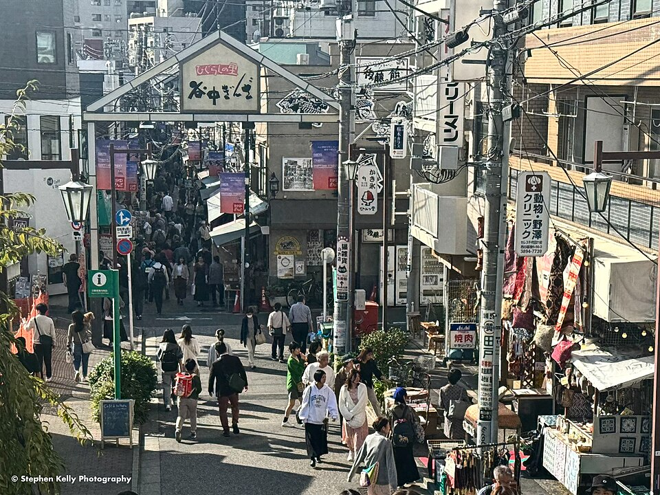
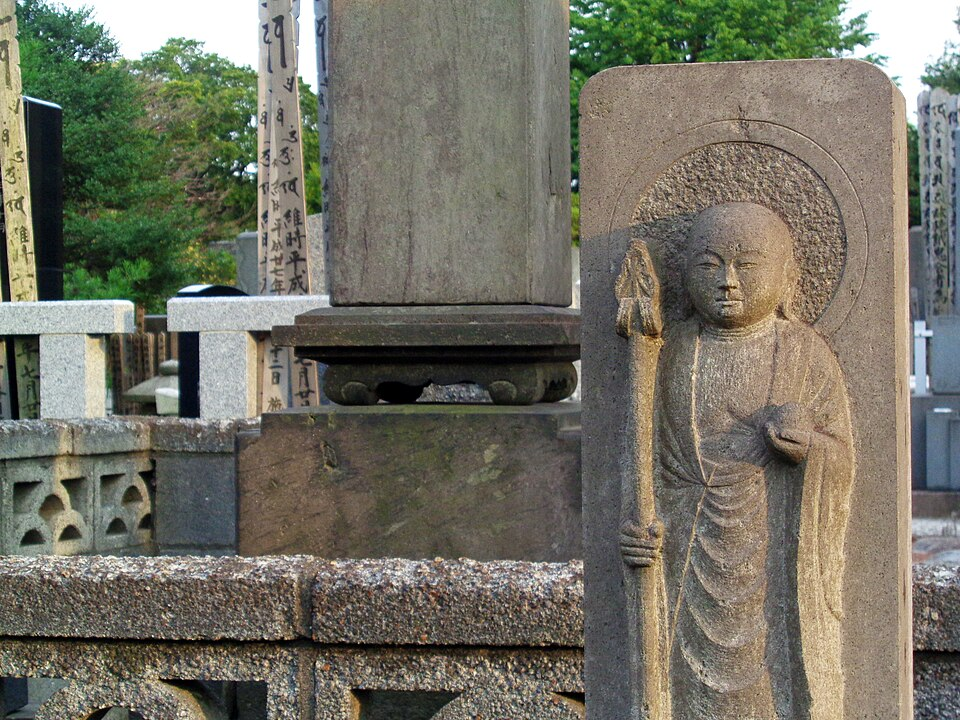
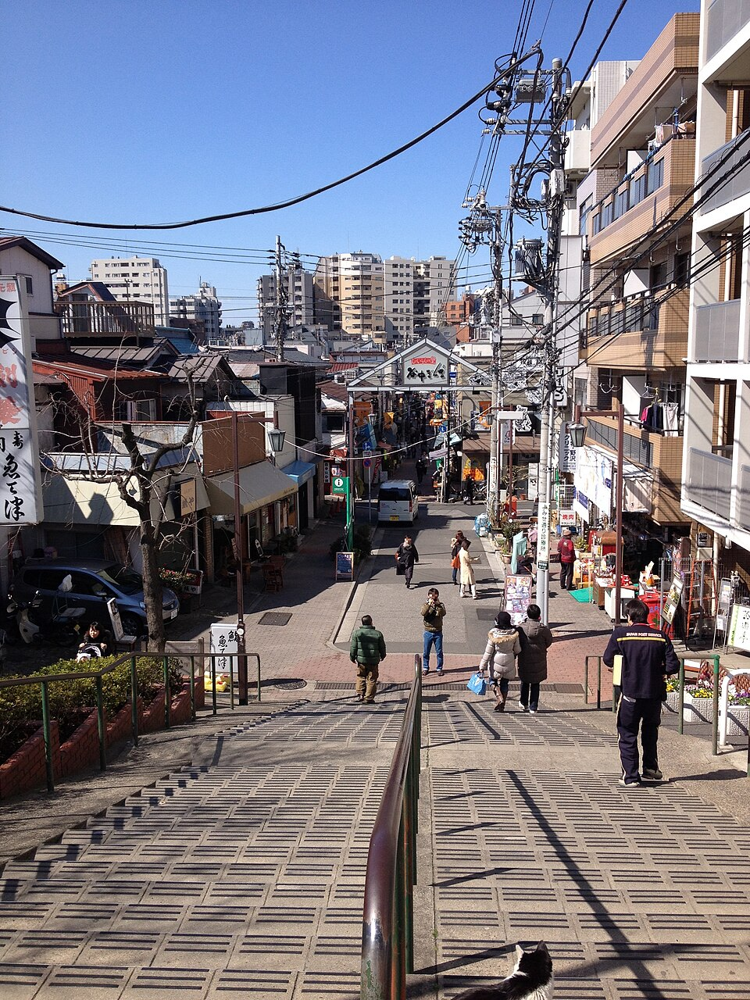

Tokyo · вт 13.10 · старый Tokyo
Отель → Asakusa
JR Akihabara, жёлтая Sobu, платформа 6, в сторону Tsudanuma / Chiba (津田沼 / 千葉), 1 остановка до Asakusabashi. Пересадка на метро Toei Asakusa (розовая, A), 2 остановки: Kuramae, Asakusa. Выход к Kaminarimon по указателям.
Запасной путь: метро Hibiya до Ueno + Ginza line до Asakusa, 16 мин.
Senso-ji: самый старый храм Tokyo
Ворота Kaminarimon с огромным фонарём → торговая улица Nakamise → главный зал и пятиярусная пагода. По легенде, храм основан после того, как в 628 году рыбаки выловили из реки статуэтку богини Kannon. Её никогда не показывают. Обед в Asakusa.


Мост Azuma: Skytree и «пламя» Asahi
С моста через Sumida видно Tokyo Skytree (634 м) и здание Asahi Beer Hall Филиппа Старка с золотым «пламенем».

.jpg){kind=link}


Asakusa → Ueno
Метро Ginza line (оранжевая, G) от станции Asakusa (здесь конечная, садишься в любой поезд на Shibuya), 3 остановки: Tawaramachi, Inaricho, Ueno.
Рынок Ameyoko
Шумный рынок вдоль путей у станции Ueno: рыба, фрукты, уличная еда. После войны тут продавали сладости и излишки американской армии.

.jpg){kind=link}


Парк Ueno: Toshogu и пруд Shinobazu
Первый общественный парк Японии (1873). Святилище Toshogu 1627 года почти не менялось с эпохи Edo; пруд Shinobazu с храмом Bentendo на острове.

.jpg){kind=link}

.jpg){kind=link}
Yanaka: кладбище, Yanaka Ginza, закат
Пешком через тихое кладбище Yanaka к улочке Yanaka Ginza (с 1950-х, ~60 лавок) и на лестницу Yuyake Dandan - «ступени заката». Времени теперь больше: можно зайти в святилище Nezu с аллеей красных ворот (часы не нашёл, лучше до 17:00).

.jpg){kind=link}

.jpg){kind=link}




Nippori → отель
JR Keihin-Tohoku или Yamanote, 4 остановки до Akihabara.